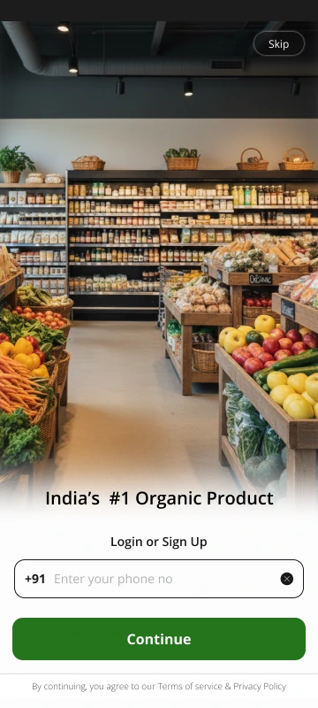
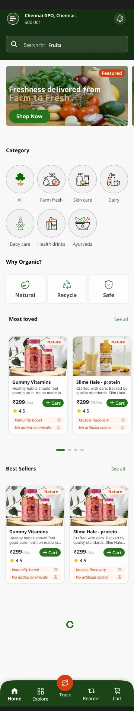
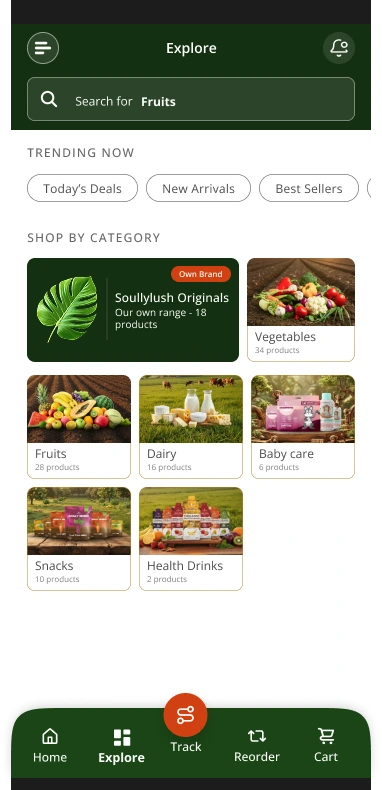
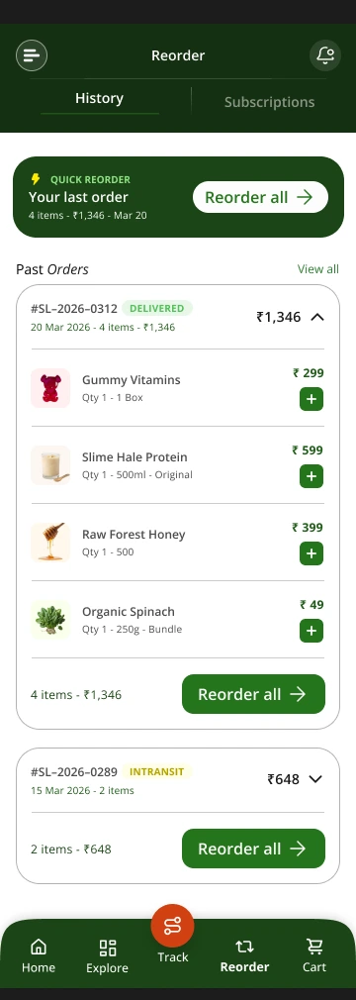
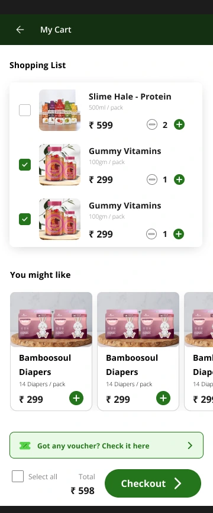
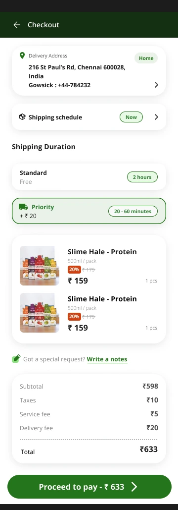

06 - Mobile Application
Mobile designed for
task completion,
not storytelling.
The app assumes higher baseline intent. The user has already downloaded it - they want to find, decide, and buy. Every interaction should feel purposeful and quick.
Read this section like a hiring manager would
Nine screens, one continuous decision: reduce anxiety, protect momentum, get to "Add to Cart" without a wasted tap. Skim the frame, read the one line under it, move on - the full reasoning for every tradeoff is in the cards below the flow.

Skip-to-browse first. Trust is earned before data is asked for - full catalogue browsing works with zero account, signup deferred to actual purchase intent.

Location context up top, Reorder promoted into primary nav. Retention behaviour built into the base layout, not bolted on later.

Category-first discovery for a low-impulse, high-trust shopper - filters lead with certification and source, not just price or rating.

One-tap repeat of last month's full list. Removes the single biggest friction point for a grocery-replenishment user: rebuilding a 35-item cart from memory.

Variant, subscription toggle, and trust badges on one scroll. For organic health products the proof has to sit next to the buy button, not link away.

Checkbox model mapped to a physical shopping-list habit, not the standard "everything in cart gets bought" convention. Tradeoff detailed below.

Address, shipping tier, and full cost breakdown compressed onto a single page. Total cost transparency before payment - no fee surprises at the last step.

Confirmation closes the trust loop, not just the transaction - delivery window and support access surface immediately, while confidence is highest.
5-tab bottom nav: two slots spent on retention, not discovery
Reorder and Track sit at the navigation level instead of inside an account menu. The Reorder tab exists specifically so a user can repurchase last month's full grocery list - 35 items, unchanged - in one tap, rather than rebuilding it manually. Track was a direct user request: on the existing app they were used to, it was buried inside Profile, and they wanted it surfaced.
Checkbox cart: mapped to a physical habit, not a digital convention
The cart uses a checkbox model, letting items be ticked on or off before checkout. This maps directly to how the target user already shops - ticking off items on a physical grocery list - rather than following the standard "everything in cart gets bought" e-commerce pattern.
Skip-first login: browsing before belonging
The login screen leads with a Skip option, not a form. A first-time visitor can explore the full catalogue - categories, PDPs, prices, certifications - with zero account. Account creation is deferred to the moment intent is highest: the first "Add to Cart."